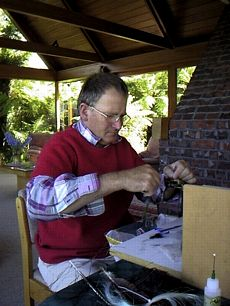

釣行日誌 ＮＺ編 「その後で」
バガー！
1999/12/15(WED)-1
ブリントさんの家は、ホキティカの町並み、サザンアルプス、タズマン海を一望できるウィットコムテラスという丘の上に建っている。大きなガラス窓がいくつも並ぶキッチンと暖炉のある居間からは、朝に、夕べにため息の出るような展望が広がる。
昨日の夕暮れ時には、夫人のグレースさんが、西の海に沈みゆく夕日を指さして、
「じーっと夕日を見つめていると、海に沈んだすぐ後に、緑色の輝きが一瞬見えるわよ」
と教えてくれた。たしかに、オレンジ色の太陽が波間に隠れた直後に、グリーンストーンを淡くしたようなかすかな緑色が輝いた。
ブリントさんは画家が本業であり、芝生の美しい庭の向かいにあるアトリエ兼ギャラリーで風景画を中心に描いている。作品のいくつかはホキティカの工芸店やアートショップ、そしてフランツ・ジョセフ氷河近くのアートショップ「アイス・フロー・アーツ」で見ることができる。
夫人のグレースさんはホキティカにある小さな空港のマネージャーとして勤めており、一日おきではあるが早朝から夕方まで忙しい仕事についている。今日は非番の日ということで、たくさんのクリスマスカードの宛名書きに忙しい。
三人の息子さんたちのうち、長男のジャスティン君はトライアスロンの有力選手、次男のランス君はネルソンのポリテクニック（専門学校）で絵画を学んでいる。そして三男のディーン君はホキティカの精肉会社に勤めるかたわら、弱冠19歳ではあるが、日本から来た著名なフライフィッシャーマンをガイドしてスプリングクリークでのビデオ撮影に協力するほどのベテランなのである。
「ボクがあまり若いんで、みんなあまり腕前を信用してくれないんだよね」
と、昨年会ったときよりは格段に大人の風格を増してきた若者、ディーン君はおだやかに笑った。
ブリントは、昨日までニュージーランド北島のベイオブアイランズ近辺でダイビングを楽しんできたそうであり、今日はゆっくりと雑事を片づけながら休養し、明日から私を連れて釣りに出かけるとのこと。今日の夕方にはディーンが仕事を終えてからスプリングクリークに連れて行ってくれるそうである。
のんびりとしたホキティカの一日をどう過ごそうか？ と考え、とりあえず午後に水族館を訪れることに決めた。すると裏庭でごそごそしていたブリントさんが、
「今日のうちにこのフライ巻いておけよ。半ダースは要るぞ」
と、黒茶色っぽいフライを見せてくれた。
「いろいろ試したけど、湖ではこれが一番効いたな」
うーん、フライタイイングはかれこれ２年近くしていないなぁ、うまく巻けるかしらん？ と、しばしフライを指につまんで見ていると、彼は居間のソファの後ろから自作のタイイングユニットと特大のマテリアルボックスとを提げてきて、テーブルに載せた。決して高価な木材が使ってあるわけでもなく、市販品のデザインから学んだのでもないようであるが、機能的に各種のツールが収められたそのタイイングユニットは、まぁ黙って座って一本巻いてみな.....と語りかけているようだった。
「ブリントさん、よければ一本巻いて見せてくれますか？」
「おお、いいよいいよ」
ということで、52歳になる彼は老眼鏡をかけて実演してくれた。

シャンクには鉛を二巻き、あるいは一巻きして重さを変え、テールには赤いフェザーとキラキラのシンセティックが数本、赤いシェニールでボディーを太く巻き、ラビットファーを乗せた後でこげ茶色のハックルを長めに巻き上げ、仕上げに金色のオーバル・ティンセルでグリグリと補強すると、なんのことはないオーソドックスなストリーマーが出来上がる。ブラックラビットである。
彼のタイイングを見ながら、心中密かに
『バガー......』
と呟く。今回はまさか湖で釣るとは思わなかったので、湖用のストリーマーとかタイプ２のシンキングラインとかはすべてオークランドに置いてきてしまったのである。ラビットのパターンもいくつかあったし、管理釣り場でおなじみのオリーブ色のマラブーとかモンタナニンフとかも一式入ったフライボックスを持ってくるべきであった。後悔、あとを絶たず。
99年の５月から７月頃にかけて、（今でもたまに放映されるが）、テレビでＮＺトヨタの四輪駆動車のＣＭが流れていた。農家のご主人がトヨタの四駆を使っていろいろと農作業に励むのだが、そのあまりのパワーゆえに、牧場の柵を延々とドミノのように倒してしまったり、牽引して引き抜いた切り株が勢い余って宙を飛んで納屋を完膚無きまでに破壊したり、庭の泥を跳ね上げて奥さんの洗濯物をドロ丸けにしたり.....と、およそ失敗のオンパレードを展開するのである。その度に、人の良さそうな顔をしたご主人は、
「バガー.....」
と呟くのである。
“Bugger”を研究社の新英和中辞典で引いてみると、
《動》(他)
3
(英俗)
(2) 〔人に対して〕ばかなふるまいをする 〔with〕.
Bugger it! [命令法で間投詞的にののしりに用いて]
(英俗) ちくしょう!, くそ!
と出ている。米語で言うところの“S**t”のように使われているようであるが、だいぶ上品な気がする。しかし女性は使わない方が賢明であろう。ＮＺの若者などは、
「Bugger me!」
などと言っているのを聞いたことがある。まぁ、なんてこったい....というようなニュアンスなのであろう。女性でも使える感嘆詞としては、
「Gosh!」
というのがあり、ホストマザーのハーマン夫人も、
「オゥ！ ゴッシュ！」
などとお鍋を焦がした時などに呟くのである。
余談の余談ではあるが、例のＣＭは最近ニュージーランドの著名なジャーナリスト・ニュースキャスターであるポール・ホルムズ氏の番組でも取り上げられ、視聴者から
「農場主はあれほど愚かではない！」
「悪い言葉づかいを広めている」
などの批判を受け、物議をかもしていたが、一般的には好意を持って受け取られていたようである。語学学校に通っているうちからあのＣＭで「バガー」を覚えてしょっちゅう使っていた私の言葉を聞いて、ディーンはケラケラと笑ったものである。
バガー！！ が自嘲の響きではなく、感嘆と感動の響きとして湖面に響くことを祈りつつ、軽いタイプ、重いタイプ合わせて八本の黒茶色のラビットフライを、念入りに、巻いた。
釣行日誌ＮＺ編 目次へ
サイトマップ
ホームへ
お問い合わせ